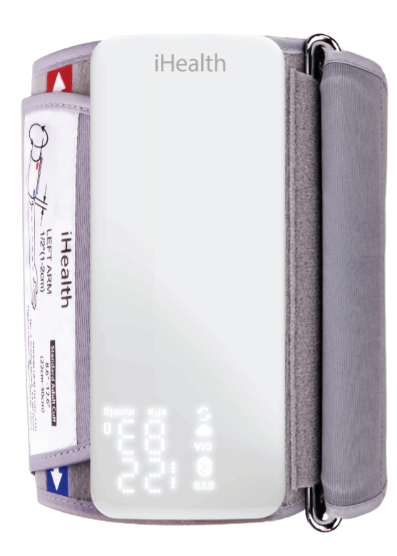

Features
- 25hr & 49 - hour blood pressure measurment
- Short measurement time & configurable time intervals
- Quiet and easy to use, (self contained on the cuff, no connection tube)
- Bluetooth Synchronisation of data with iHealth CardioPro cloud App
- Interpretive report and trend reporing for health care professionals

Tehcnical information
- Connection: Bluetooth Smart
- Pressure accuracy: ± 3mmhg
- Pulse rate accuracy: ±5%
- Cuffs: 22-30cm and 30-42cm
- Dimensions: 141.5mm x 60.5mm x 19mm
- Weight: 110g (excluding cuff)
- Battery: USB charger
iHealth Cardiomed (ABP100) is a class IIa medical device which bears the CE mark under this regulation. For health care professionals only. Read instructions carefully.